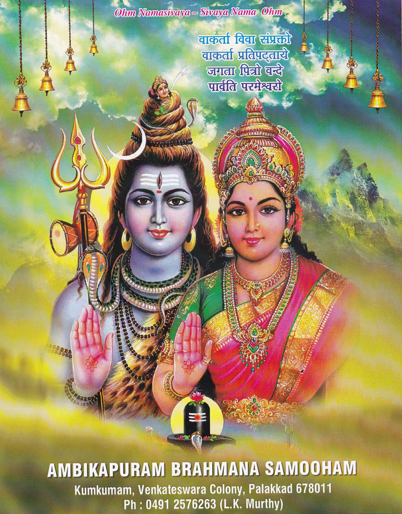

Ambikapuram Brahmana Samooham
Palakkad, Kerala
Ambikapuram Brahmana Samooham
Palakkad, Kerala

AMBIKAPURAM BRAHMANA SAMOOHAM
Kumkumam, Venkateswara Colony, Palakkad 678011
Ph: 0491 2576263( L.K. Murthy)
MAHARUDRA YAJNAM
2016
MAHARUDRA YAJNAM-2016
PROGRAMME
Sunday 22nd, May 2016
| Time | Event |
|---|---|
| 5.00 a.m. | Ganapathi Homam |
| 6.00 a.m. | Vigneswara Pooja Anugnya Sankalpam |
| 7.00 a.m. | Mahayagna Arambham |
| 8.00 a.m. | Breakfast |
| 9.00 a.m. | Rudrajapam Arambam |
| 11.00 a.m. | Kramarchana |
| 11.30 a.m. | Gopooja |
| 12.00 p.m. | Vasoordhara |
| 12.30 p.m. | Prathyaksha Godhanam |
| 12.45 p.m. | Dampathi Pooja |
| 1.00 p.m. | Poornahoothi, Deeparadhana,Uttarangam , Asheervadam, |
| 1.30 p.m. | Kalababhishekam |
| 1.45 p.m. | Deeparadhana,Neivedyam, Annadhanam |
Ambikapuram Desam consists of Venkateswara colony,Sivanandapuram Colony, Cut Road ,Sriram colony,& Prasanth Nagar.Ambikapuram Brahmana Samooham is venturing to conduct Maha Rudram which has never been done in the past in Ambikapuram, Palakkad. Maha Rudram is a very rare yagnam which is done for the welfare of humanity as a whole irrespective of caste and creed.
Ambikapuram Brahmana Samooham has decided to conduct Maha Rudram on Sunday the 22nd of May 2016 at the plot near the Samooham premises in Venkateswara Colony. About 151 learned vedic pundits from all over South India will be participating in the Yagnam under the stewardship of Brahmasree K.S. Venkitachalam Vadhyar . The Yajnam falls on Krishnapaksha Prathama Edavam 8, 1191 . A large number of devotees in and around Palakkad are expected to attend the Maha Rudram. The Samooham estimates Rs. 15 lakhs required to meet the expenses for Maha Rudram. It is very rare opportunity for us to perform the Yajnam, for the benefit of all.
Details of anticipated expenses are furnished in the Appeal page.